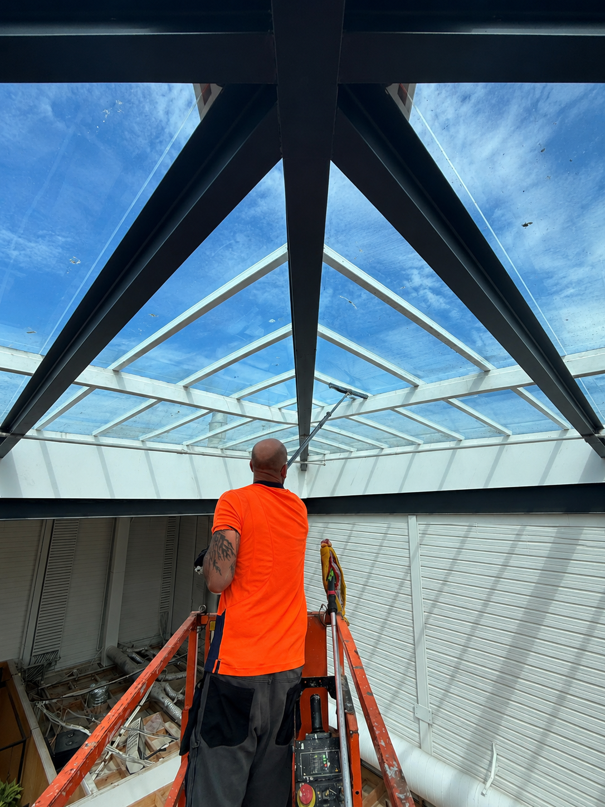
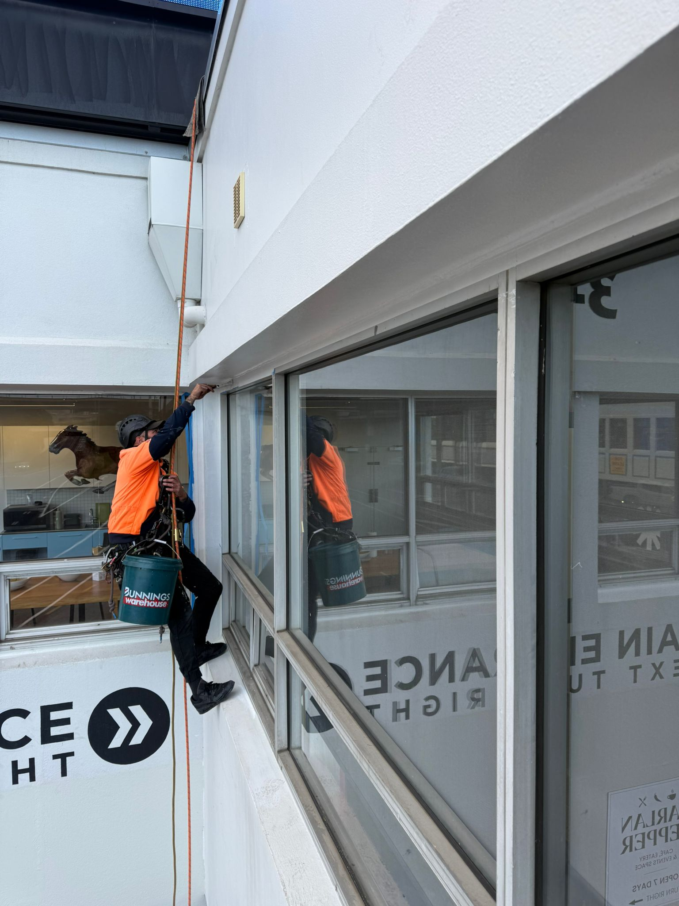
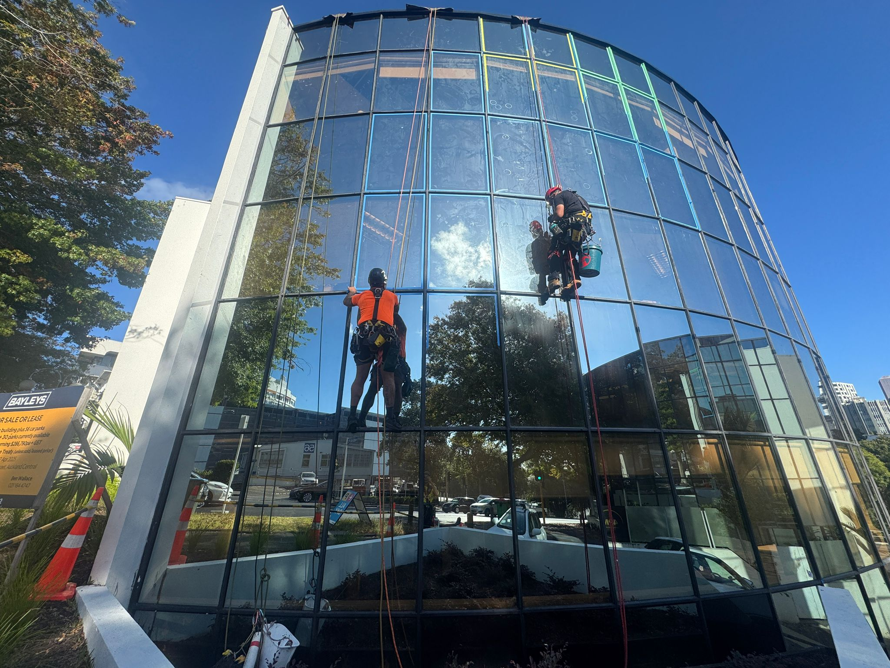

Rope Access &
Building Maintenance.
We deliver high-quality building exterior services across Auckland, matching the access method, methodology, and safety controls to each property.
We deliver full building washes, professional window cleaning, gutter cleans, and roof washes for commercial towers, residential high-rises, retail centres, and industrial buildings. We use multiple methodologies and build a plan tailored to your property, so the access method, wash process, and safety controls fit the job properly.
Exterior painting, protective coatings, graffiti removal, anti-graffiti treatments, and surface preparation works applied by certified rope access technicians. We reach the full extent of building facades, including areas behind plant, in light wells, and on curved structures.
We identify and repair failed sealant, cracked caulking, and leak points on building facades, glazing systems, and penetrations. Targeted access planning helps keep repairs efficient, tidy, and properly matched to the building.
Comprehensive facade condition inspections with detailed written reports. We assess glazing, cladding, sealant joints, fixings, and structural elements, identifying defects, ranking their severity, and giving you a clear picture of what your building needs.
Facade remediation, panel replacement, glazing repairs, and cladding fixes carried out at height. We work on glass, aluminium composite, precast, and a wide range of cladding systems, with the access method matched to the project.
Rope access and at-height support for construction teams where specialist access planning keeps the programme moving. We help with high-level installation support, temporary works access, facade assistance, and hard-to-reach tasks that need trained technicians working safely at height.
Banner, signage, and promotional installations for building exteriors, events, retail sites, and high-level placements. We plan the access around the building, fixing points, public areas, weather, and timing so installs and removals are completed safely and neatly.
At-height green wall maintenance for vertical landscapes, planted facades, and hard-to-access garden systems. We help with trimming, plant health checks, irrigation observations, access planning, and ongoing care where rope access is the cleanest way to reach the work face.
Professional bird proofing and pest-control support installed safely at height. We install spikes, netting, wire systems, and other deterrent products across building facades, ledges, parapets, and roof structures using the right access setup for the site.




Right Access.
Right Method.
Ready to Get
Your Building Sorted.
Tell us what you need and we'll give you a straight answer on scope, timeline, and cost.
Get a Free Quote